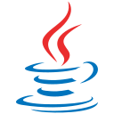
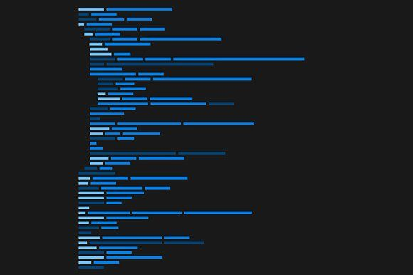

Linguagem principal para construção de aplicações robustas.
Olá, me chamo
Focado em aprender desenvolvimento back-end com Java, Spring Boot e nas tecnologias utilizadas para construir aplicações de qualidade.
Ver projetos
Sobre mim
Tenho grande interesse em desenvolvimento back-end com Java e Spring Boot e estudo diariamente para aprofundar meus conhecimentos nessa área.
Atualmente estou focado em conceitos como orientação a objetos, APIs REST, bancos de dados relacionais, autenticação, testes e boas práticas de desenvolvimento, buscando compreender não apenas como implementar soluções, mas também os motivos por trás de cada decisão técnica.
Acredito que aprender de forma contínua e resolver problemas reais é o caminho para evoluir como desenvolvedor.


Linguagem principal para construção de aplicações robustas.
Framework para criação de APIs e aplicações enterprise.
Banco de Dados relacional para persistência de dados.
Banco de Dados relacional para persistência de dados.
Ferramenta utilizada para testar APIs REST, criar coleções de requisições, gerenciar variáveis de ambiente e validar o funcionamento dos endpoints durante o desenvolvimento.
Ferramenta de controle de versão utilizada para registrar alterações no código, criar branches, gerenciar versões e facilitar o trabalho colaborativo em projetos de software.
Ferramenta utilizada para documentar, visualizar e testar APIs REST por meio da especificação OpenAPI, facilitando o desenvolvimento e a integração entre sistemas.
IDE da JetBrains para desenvolvimento Java com autocompletar inteligente, debug avançado e suporte a frameworks como Spring.
API REST para agendamento de mensagens ou reuniões, desenvolvida com Java + Spring Boot, aplicando boas práticas como DTOs, camada de serviço, validações e documentação com Swagger.
GitHubAPI REST para gerenciamento de alunos e suas matrículas, desenvolvida com Java + Spring Boot, aplicando boas práticas como DTOs, camada de serviço e documentação com Swagger.
GitHubEstou disponível para oportunidades e projetos interessantes.
Entre em contato comigo !
joaosannetof@gmail.com
github.com/acsanfrancisco